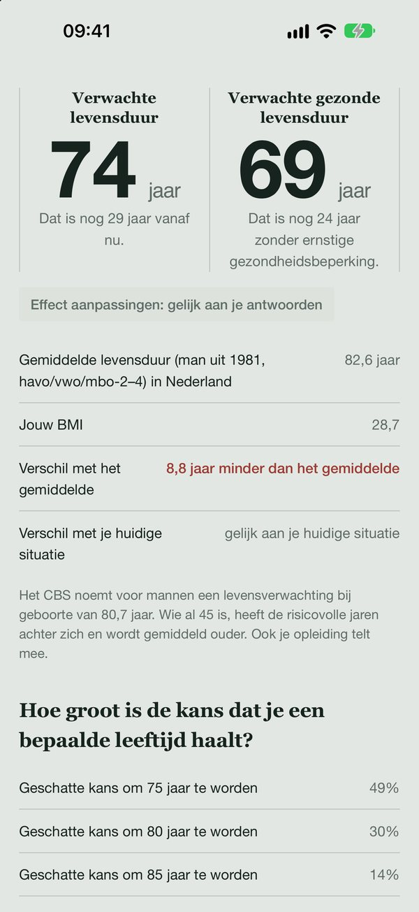
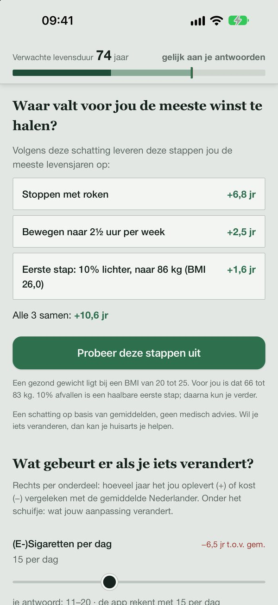
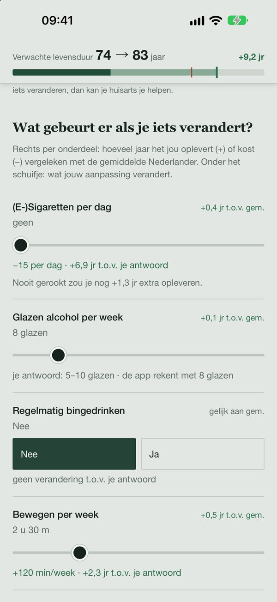

LeefLang
LeefLang
En wat levert een verandering jou op? Ontdek het met LeefLang.
Bekijk LeefLang in de App Store€0,99 · iPhone en iPad · geen abonnement, geen advertenties

Beantwoord veertien korte vragen over jezelf en je leefstijl. LeefLang schat hoe oud je wordt, hoeveel jaren je in goede gezondheid leeft en hoe groot je kans is om 80, 90 of zelfs 100 te worden.
LeefLang rekent uit welke haalbare stappen jou persoonlijk de meeste levensjaren opleveren, zoals stoppen met roken, meer bewegen of een paar kilo lichter. Met één tik probeer je ze uit.

Minder sigaretten, meer bewegen, minder alcohol, beter slapen: je levenslijn schuift meteen mee. Zo zie je in concrete jaren wat een verandering je oplevert.

De berekening begint bij de sterftetafel van het CBS en gebruikt grote internationale studies naar leefstijl. Zo rekent LeefLang.
Geen account, geen tracking, geen advertenties. De app bewaart je antwoorden niet en verstuurt niets. Privacyverklaring.
LeefLang geeft een schatting op basis van gemiddelden van grote groepen mensen. Vragen over je gezondheid? Vraag je huisarts.
Doe de test, deel je resultaat en daag je vrienden uit.
€0,99 · iPhone en iPad · geen abonnement, geen advertenties